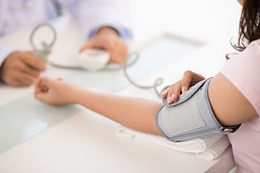

Dnes DÁREK k objednávce
Vlhčené ubrousky Linteo pro denní potřebu, 15ks
LINTEO Satin univerzální vlhčené ubrousky ...
Náš tip
Sensura Mio - jednodílný sáček kolostomický - konkávní, šedá barva - 10 ks
Sensura Mio - jednodílný sáček ...
1 250 Kč
Novinky
Kneipp 3 bylinky na odvodnění - 60 tobolek/bal.
Kneipp 3 bylinky obsahuje výtažky ze tří ...
234 Kč
Dámské vycházkové pantofle Santé - N/211/1/75/CP- fialové s šedou podešví
Dámské zdravotní pantofle s anatomicky ...
877 Kč
Články | Měříte si krevní tlak?
autor: Malkol | Publikováno v rubrice: Zdraví
Ischemická choroba srdeční spolu s cévními mozkovými příhodami patří mezi nejčastější komplikace dlouhotrvajícího, nebo špatně kontrolovaného vysokého krevního tlaku - hypertenze. Riziko stoupá s výskytem dalších, v naší populaci běžných faktorů jako je kouření, nadměrná tělesná hmotnost, diabetes mellitus. Téměř za standartní lze hypertenzi považovat u osob exponovaných pracovnímu stresu a vypětí.
Zvýšený krevní tlak – hypertenze postihuje v naší populaci dle některých odhadů 15 -20% obyvatel. Záludnost tohoto onemocnění spočívá v tom, že je po dlouhou dobu zcela bezpříznaková.
Při tom však v některých případech, třeba v případě včasného záchytu, stačí k normalizaci krevního tlaku změna životního stylu, úprava hmotnosti, vhodná pohybová aktivita.
Za krevní tlak jsou označovány hodnoty tlaku krve ve velkých tepnách. Za normální hodnoty krevního tlaku se u věkové skupiny 30 – 60 let považují hodnoty nižší než 140/90 mmHg. První číslo znamená tlak tzv. systolický, tedy tlak v okamžiku kdy srdce jako pumpa svým stahem do oběhu pumpuje krev, druhé číslo je tzv. tlak diastolický, odpovídající fázi, kdy dochází k naplnění srdečního svalu. Krevní tlak podléhá řadě vlivů. Stress, emoční napětí ( a tedy i např. návštěva lékaře), předcházející fyzická zátěž, požití alkoholu, nadměrný chlad nebo teplo jsou jen některé z nich. Vypovídající hodnoty krevního tlaku by měly být hodnoty, naměřené za standartních podmínek, v klidu.
Pravidelné kontroly krevního tlaku patří mezi základní preventivní opatření a to jak u osob potenciálně rizikových, tak u osob s již diagnostikovanou a léčenou hypertenzí. Pravdivý obraz o krevním tlaku nám mohou dát ale pouze opakovaná měření. Nahodilou kontrolu krevního tlaku při příležitostné návštěvě lékaře, nelze považovat za dostatečně přesnou ani vypovídající.
S měřením tlaku dnes již nemusíme být odkázáni na návštěvu lékaře. Klasické rtuťové přístroje na měření tlaku - tonometry patří minulosti. Hodnocení měření vyžadovalo jistou zkušenost, kontrola tlaku samotným jedincem byla problematická a tak tyto přístroje patřily téměř výhradně do rukou zdravotníků.
Současnost nám přinesla nové automatizované přístroje na změření tlaku, s digitálním zobrazením obou tlakových hodnot. Nabídka je široká a základním kritériem při výběru tonometru by měla být volba typu s vhodnou velikostí manžety. Toto upozornění se ale týká především extrémních velikostí - extrémně drobné paže na straně jedné, nebo naopak mohutné paže na straně druhé. Většině dospělé populace tak vyhovuje běžné provedení. Důležitým parametrem je ale stabilita a tedy spolehlivost poskytovaných výsledků. V tomto případě je lépe spolehnout se na tonometry ověřených výrobců. V každém případě investici do tonometru v řádu stokorun je opravdu možné brát jako investici do našeho zdraví.
zpět na seznam článků